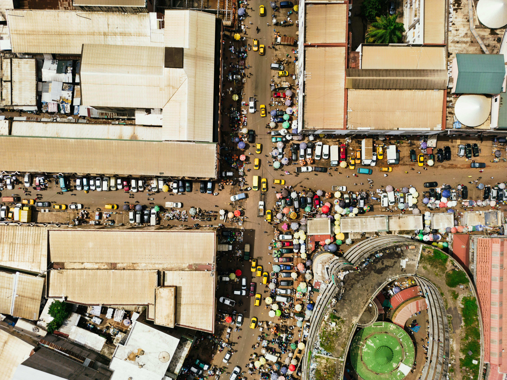

Buea
18k
Mont Cameroun (Le Char des Dieux)
Le plus haut sommet d'Afrique de l'Ouest (4095m)

RetourLe carrefour des cultures et des paysages africains
Le Cameroun est une destination unique surnommée "L'Afrique en Miniature". C'est l'un des rares pays au monde à offrir sur un même territoire toute la diversité du continent : des plages de sable fin à Kribi, des montagnes volcaniques à l'Ouest, une forêt équatoriale dense au Sud et des savanes sahéliennes au Nord. Avec plus de 250 ethnies et une gastronomie mondialement réputée, le Cameroun est une terre de passion, de football et d'accueil.
Découvrez les 15 merveilles du patrimoine camerounais
Le plus haut sommet d'Afrique de l'Ouest (4095m)

Seules chutes au monde se jetant directement dans l'océan

Safari mythique à la rencontre des lions et éléphants

Le cœur de l'art et du sultanat Bamoun

Oasis de verdure face aux plages de sable noir

Trésors historiques dans l'ancien palais présidentiel

Paysage lunaire spectaculaire de l'Extrême-Nord

Pirogue sur le fleuve Nyong et arbres millénaires

Majestueuses chutes ayant servi au film "Greystoke"

Icône architecturale de la capitale économique

Sanctuaire de biodiversité inscrit à l'UNESCO

L'une des plus anciennes forêts humides d'Afrique
Plongée au cœur de l'histoire et des chefferies Bamiléké
Sable blanc et dégustation de crevettes grillées
Symbole fort de l'histoire politique du pays
La puissance d'une nation plurielle.
Le Cameroun est une terre de traditions vivantes, où les chefferies séculaires de l'Ouest (Bamiléké, Bamoun) côtoient les sultanats du Nord et les peuples de la forêt au Sud. L'histoire du pays est marquée par une double influence coloniale (française et anglaise) qui a forgé son identité bilingue unique. C'est aussi une nation de culture urbaine dynamique, berceau du Makossa et du Bikutsi.
Un système monarchique traditionnel puissant et respecté, gardien des valeurs ancestrales.
Les rythmes endiablés qui font vibrer les nuits de Douala et Yaoundé.
Le football est une religion nationale, symbole d'unité et de résilience.
Seul pays d'Afrique officiellement bilingue (Français/Anglais), une richesse diplomatique.

L'artisanat camerounais est l'un des plus riches du continent. Découvrez notre sélection d'objets authentiques.
 Artisanat
Artisanat
Masque en bois orné de perles colorées, emblématique de l'art du sultanat de Foumban.
 IGP
IGP
Considéré comme l'un des meilleurs poivres au monde, premier produit africain labellisé IGP.
 Rare
Rare
Tissu sacré des chefferies Bamiléké, teint à l'indigo naturel avec des motifs rituels.
Un café d'altitude aux arômes riches, cultivé sur les terres volcaniques de Dschang.
Sculpture fine réalisée par les artisans d'Abang-Mbang, bois précieux noir intense.
Maroquinerie d'exception en cuir de chèvre, tannage naturel et finitions main.

Yaoundé, Centre

Douala, Bonapriso

Douala, Akwa

Kribi, Bord de mer

Kribi, Route des chutes

Yaoundé / Douala
La cuisine camerounaise est l'une des plus riches du continent. Chaque région a sa spécialité phare, du Ndolé littoral au Taro des hauts plateaux.
Le plat national : feuilles de ndolé, arachides, viande ou crevettes.
Poulet frit avec plantains mûrs et légumes. Le plat des "Directeurs Généraux".
Gâteau de haricots cornille à l'huile de palme, cuit à la vapeur.
Taro pilé avec une sauce jaune épicée, spécialité du Nord-Ouest.
Mélange de feuilles sauvages et fufu de manioc, très populaire au Sud-Ouest.
Ragoût de poisson à la sauce noire d'épices brûlées, spécialité Bassa.
Brochettes de viande grillées au feu de bois avec du piment en poudre.
Ragoût de plantain à la chèvre ou au porc, spécialité Bamiléké.
Infusion d'hibiscus sucrée et parfumée à la menthe.
Le petit-déjeuner populaire des rues camerounaises.
Base solide pour accompagner les meilleures sauces de l'Ouest.
Le Cameroun ("Rivières des crevettes") offre les meilleures de la côte.
Le Cameroun célèbre ses traditions à travers des festivals hauts en couleur.
Grande fête culturelle des peuples de l'eau (Sawa) sur les berges du Wouri à Douala.
Festival ancestral du peuple Bamoun à Foumban, célébrant l'histoire et le sultanat.
Ascension annuelle du Mont Cameroun à Buea par des athlètes du monde entier.
La période idéale pour le safari au nord (Waza) et les randonnées à l'ouest. Le temps est sec et ensoleillé partout.
Une accalmie dans les pluies, parfaite pour profiter des plages de Kribi sans la grande chaleur de décembre.
Vérifiez les conseils aux voyageurs pour les zones frontalières. Yaoundé, Douala et Kribi sont sûres en respectant les règles d'usage.
Vaccin fièvre jaune obligatoire. Traitement antipaludéen indispensable. Ne buvez que de l'eau capsulée (Tangui, Sémé).
Le pays est bilingue Français/Anglais. En ville, vous vous ferez comprendre dans les deux langues sans difficulté.
Franc CFA (XAF). Les distributeurs sont omniprésents à Douala et Yaoundé. Prévoyez du cash pour les villages.
Expert Littoral & Kribi
Samuel vous fera découvrir les secrets de la côte et les meilleures pirogues pour explorer la Lobé.
Guide Culturelle Ouest
Marie est experte des chefferies Bamiléké et de l'art Bamoun. Elle vous ouvrira les portes des palais.
Expert Safari Nord
Abdou connaît le parc de Waza et Rhumsiki sur le bout des doigts. Un traqueur d'animaux exceptionnel.